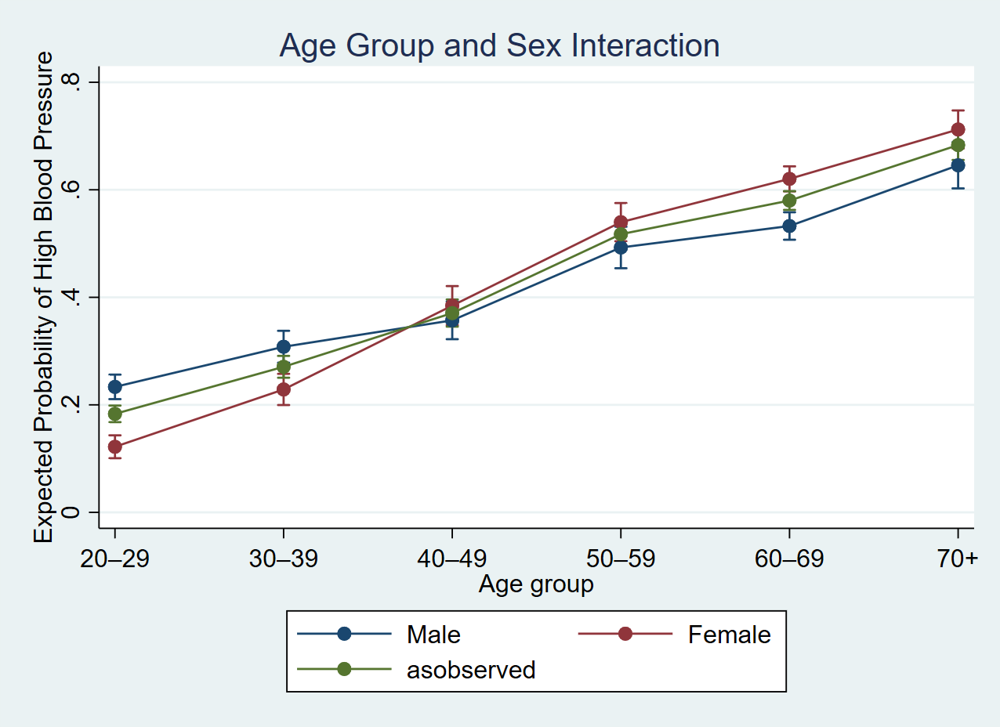

We use data from the Second National Health
We fit a logistic regression model of high
. logistic highbp weight agegrp##sex, nopvalues vsquish
Logistic regression Number of obs = 10,351
LR chi2(12) = 2376.78
Prob > chi2 = 0.0000
Log likelihood = -5862.3774 Pseudo R2 = 0.1685
---------------------------------------------------------------
highbp | Odds ratio Std. err. [95% conf. interval]
--------------+------------------------------------------------
weight | 1.043864 .0017778 1.040385 1.047354
agegrp |
30–39 | 1.514186 .1585328 1.233275 1.859082
40–49 | 1.931504 .2131303 1.55586 2.397843
50–59 | 3.566454 .3957162 2.869402 4.432837
60–69 | 4.249484 .385805 3.556778 5.077099
70+ | 7.077616 .8911295 5.529856 9.058582
sex |
Female | .4292923 .0554164 .3333292 .5528826
agegrp#sex |
30–39#Female | 1.494007 .2615056 1.060135 2.105444
40–49#Female | 2.649714 .4661947 1.876883 3.740767
50–59#Female | 2.863595 .4966853 2.038319 4.023008
60–69#Female | 3.448893 .5183538 2.568904 4.630327
70+#Female | 3.24079 .6147421 2.234536 4.700179
_cons | .0125581 .001905 .0093283 .0169062
---------------------------------------------------------------
Note: _cons estimates baseline odds.
Below we have a figura about interaction between Age and Sex
